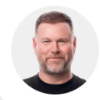
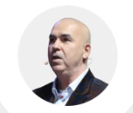

AI Trading
EX-AI and Neyro daily percentage records are visualized from the provided workbook.
A modern blockchain and AI trading ecosystem focused on transparent tools, digital asset access, and a mission to help users obtain financial freedom outside the legacy system.
Aurum Foundation presents itself as an AI and blockchain platform serving digital asset management, automated trading, exchange access, Neobank services, and card products. The ecosystem positions technology as the layer that helps users participate in modern finance with clearer tools and a broader product suite.
Aurum presents its corporate structure as a transparent, multi-jurisdiction legal foundation supporting global operations, infrastructure development, and long-term scalability.
EX-AI and Neyro daily percentage records are visualized from the provided workbook.
Public material frames Aurum around digital asset management and blockchain-based access.
Reference videos and social channels are linked directly for visitor verification.
Warsaw, Poland
KRS: 0001117211Dubai, United Arab Emirates
License No. 1321058Hong Kong
Registered: November 7, 2024 Declared Capital: USD 1,000,000North Vancouver, British Columbia, Canada
Company No.: BC1571382
Chief Executive Officer
Web3 expert with 27 years of experience who previously led Binance's expansion in Latin America. He drives Aurum's strategic growth and bridges traditional and decentralized finance.
Co-Founder & Marketing Director
Brings more than 15 years of network marketing and cryptocurrency experience, with a record of leading fintech and blockchain growth campaigns.
COO, Aurum Foundation
Investment banking leader with 18+ years of experience, including $23 billion in executed deals and $2 billion in digital asset transactions.

Chief Network Development Officer
Global business leader with decades of experience in network development and large-scale growth systems, focused on scalable, long-term ecosystem growth.
Chief Executive Officer of AURUM Exchange
Exchange operator with regulated crypto and payment infrastructure experience. He previously worked as a strategic partner of Binance in South America.
Head of Partnerships
Web3 and fintech partnerships executive experienced in institutional relationships and global business development.
Director of Product Development
Product and business development leader with over 6 years of experience creating fintech-focused solutions and shaping product strategy.
Chief Blockchain Officer
Certified expert in blockchain, finance, and digital marketing with over 25 years in blockchain and online marketing.
Co-Founder & Director of Trading Operations
Combines algorithmic trading and market analysis expertise to develop trading systems and lead Aurum's trading operations.
RWA Relationships Advisor
Contributes deep expertise in commodities, bullion markets, and capital markets as Aurum expands its leadership and advisory structure.
Chief of Africa Relations
Brings government-level financial expertise and regional infrastructure access to support Aurum's Africa relations and expansion.
VC Advisory
Venture and capital markets professional specializing in global fundraising, investor relations, and capital structuring across Web3 and fintech.
VC Advisory
Web3 investor and venture partner experienced in venture capital, M&A, startup ecosystems, and global fund and accelerator networks.
CEO statement reference from the provided document.
Trading Bot OverviewShort overview video linked as a trading bot reference.
Access NoteDocument reference explaining why VPN access may be required.
Results UpdateBryan Benson Zoom call update referenced in the document.
Since launching in 2023, EX-AI Bot has operated through multiple market phases, including strong uptrends, risk-off cycles, and high-volatility drawdowns. The performance graphic highlights stable positive monthly results and an AI-driven, risk-managed execution framework.
Ex-AI data source: Aurum Daily Percentages.xlsx, sheet "Ex-AI Daily Percentages". Daily rows were used for bars; workbook summary rows were excluded from the chart series.
Neyro is represented by the Quantum Alpha live trading agent inside Aurum Neyro. The beta-results graphic highlights strong testing momentum, more than 5,000 connected wallets, real-market trading performance, and ongoing optimization before broader public release.
Neyro data source: Aurum Daily Percentages.xlsx, sheet "Neyro Daily Percentages". Empty future months are retained in the filter so visitors can see which months have no entries yet.